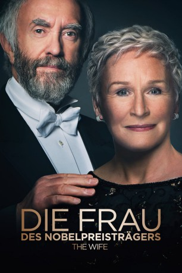
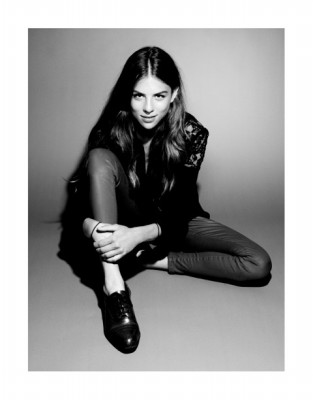

#11205 Die Frau des Nobelpreisträgers
Alternativ: The Wife (Englischer Titel)
Auszeichnungen: für 1 Oscars nominiert 1 GoldenGlobes gewonnen
 
 IMDB-Wertung: 7.2 / 10
IMDB-Wertung: 7.2 / 10  Metascore: 77
Metascore: 77 
Joe Castleman hat es endlich geschafft: Ein Anruf am frühen Morgen beschert ihm die freudige Nachricht, dass er den Literaturnobelpreis erhalten wird. Gemeinsam mit seiner Frau Joan die ihn bei seiner Arbeit immer unterstützt hat, feiert er erst einmal ausgelassen, bevor Freunde und Familie informiert werden. Bald geht es gemeinsam zur Preisverleihung nach Stockholm, mit im Flieger sitzen auch noch der nach Anerkennung seines Vaters strebende Sohn David und der Journalist Nathaniel Bone. Bone will unbedingt eine Biografie über Castleman schreiben, was das Ehepaar Castleman bislang stets abgelehnt hatte und das mit gutem Grund: Die beiden hüten ein Geheimnis, das das Zeug zum waschechten Skandal hat. Und ausgerechnet auf der Reise, die mit Joes größtem Erfolg seiner Karriere gekrönt werden soll, droht dieses Geheimnis nun aufzufliegen…
Jahr: 2017
Dauer: 100 Minuten
FSK: 6
Land: England Studio: Square OneTonspuren: DTS - ,
Untertitel: Deutsch, Englisch,
Auflösung: 1080p (1920x808) Größe: 3932 MB
Genre: Drama
Regisseur: Björn Runge
Drehbuch: Jane Anderson, Meg Wolitzer
Soundtrack: Jocelyn Pook
Darsteller:
 Glenn Close als Joan Castleman
Glenn Close als Joan Castleman Jonathan Pryce als Joe Castleman
Jonathan Pryce als Joe Castleman Max Irons als David Castleman
Max Irons als David Castleman Christian Slater als Nathanial Bone
Christian Slater als Nathanial Bone Harry Lloyd als Young Joe
Harry Lloyd als Young Joe- Annie Starke als Young Joan
 Elizabeth McGovern als Elaine Mozell
Elizabeth McGovern als Elaine Mozell- Johan Widerberg als Walter Bark
- Karin Franz Körlof als Linnea
- Jan Mybrand als Arvid Engdahl
- Anna Azcárate als Mrs. Lindelöf
- Jane Garda als Constance Finch
- Alix Wilton Regan als Susannah Castleman
- Nick Fletcher als King Gustav
 Suzanne Bertish als Dusty Berkowitz
Suzanne Bertish als Dusty Berkowitz-  Morgane Polanski als Smithie Girl Lorraine
- Twinnie Lee Moore als Flight Attendant Monica
- Michael Benz als White
- Catharina Christie als Hotel Doctor
- Carolin Stoltz als Hotel Nurse
- Dougie Rankin als Concorde Passenger (uncredited)
 Richard Cordery als Hal Bowman
Richard Cordery als Hal Bowman- Peter Forbes als James Finch
- Fredric Gildea als Mr Lagerfelt
- Mattias Nordkvist als Dr Ekeberg
- Grainne Keenan als Carol Castleman
- Isabelle von Meyenburg als Nobel Hostess
- John Moraitis als Lovejoy
- Johanna Andersson als Hotel Manager
- Håkan Pettersson als Gustav
- Ossian Skarsgård als Young David
- Ben Bradley als Nobel Guest (uncredited)
- Leo Horsfield als Student (uncredited)
- Dmytro Morykit als Airplane Passenger (uncredited)
Datei: X:\2017(A-F)\Frau des Nobelpreisträgers, Die (2017, FSK6, 1920x808).mkv seit 15.05.2019
Festplatte: HD 2017(A-Z)-2018(A-F)
 Es gibt insgesamt 152 Filme in der Gruppe '2017(A-F)'
Es gibt insgesamt 152 Filme in der Gruppe '2017(A-F)'